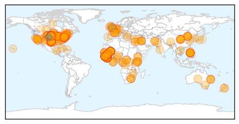

30 Day Trends
Web: 0 alerts, 6 warnings
Twitter: 1 alerts, 0 warnings
Top Articles:
- 1.000
- Ebola Death Toll Is Now Over 5,000, Mali Quarantines Nearly 100 Possible Contacts Of Nurse Who Died Of Ebola
- 1.000
- Doctor With Ebola Dies in Nebraska Hospital
- 1.000
- Fearful Mali places almost 600 under Ebola surveillance
- 1.000
- Fearful Mali places almost 600 under Ebola surveillance
- 1.000
- Ebola: Panic in Mali as 600 placed under surveillance
- 1.000
- Doctor from Sierra Leone dies from Ebola in US
- 1.000
- Is southern Manitoba ready for Ebola?
- 1.000
- Fearing Ebola surge, Mali widens virus watch
- 1.000
- G20 pledges support to fight Ebola in West Africa
- 1.000
- Dr Martin Salia dies from Ebola after arriving in Nebraska for treatment
- 1.000
- Dr Martin Salia dies from Ebola after arriving in Nebraska for treatment
- 1.000
- Sierra Leone doctor dies of Ebola at Nebraska hospital
- 1.000
- Ebola Kills Second Person in US, With Death of Dr. Martin Salia
- 1.000
- One Surprisingly Simple Way to Beat Ebola (That Isn't as Simple as It Seems)
- 1.000
- Ebola-infected surgeon from Sierra Leone, Dr Martin Salia, dies at US hospital
- 1.000
- You're Much More Likely To Survive Ebola If You Catch It In America
- 1.000
- #Ebola: Mali isolates 600 suspects
- 1.000
- Martin Salia, Doctor with Ebola dies two days after arriving in Nebraska for treatment
- 1.000
- Tourist to SA turned away by US doctor over Ebola fears
- 1.000
- The Chosun Ilbo (English Edition): Daily News from Korea
- 0.999
- Mali fears surge of Ebola, expands watch to 440 people
- 0.999
- Dr. Salia's case raises questions about Ebola test
- 0.999
- Doctor With Ebola Dies at Nebraska Hospital – WebMD
- 0.999
- Ebola patient dies at Omaha hospital
- 0.999
- Nebraska patient case raises questions about Ebola test
- 0.999
- Liberia Sets December 25 Goal: No New Ebola Cases
- 0.999
- Ebola-striken surgeon dies at Nebraska hospital
- 0.999
- NationalJournal
- 0.999
- Liberia Sets December 25 Goal: No New Ebola Cases
- 0.999
- Doctor with Ebola Dies in Nebraska Hospital
- 0.999
- Hospital Reports Surgeon With Ebola In Life-Threatening Condition : Trending News : Jobs & Hire
- 0.999
- Liberia Sets December 25 Goal: No New Ebola Cases
- 0.999
- Why It's Too Early to Forget About Ebola
- 0.999
- Second Ebola patient has died in the United States: Dr. Martin Salia
- 0.999
- Ebola claims Dr. Martin Salia even as others have survived
- 0.999
- Doctor's death marks second U.S. Ebola fatality
- 0.999
- US to screen travelers from Mali for Ebola
- 0.999
- Liberia Sets December 25 Goal: No New Ebola Cases
- 0.999
- Sierra Leone doctor dies of Ebola at Nebraska hospital
- 0.999
- Latest Ebola death shows danger remains
- 0.999
- Enhanced Ebola screening set for Mali travelers
- 0.999
- Surgeon Dies of Ebola in Nebraska
- 0.999
- Ebola Doc Treated in Nebraska Initially Tested Negative for the Virus
- 0.999
- Doctor with Ebola Dies in Nebraska Hospital
- 0.999
- Dr. Martin Salia, the surgeon who contracted Ebola in Sierra Leone, dies in Nebraska hospital
- 0.999
- Ebola Patient Dr. Martin Salia Dies at Nebraska Hospital
- 0.999
- Ebola Screenings to Include Mali
- 0.999
- Doctor’s death marks second U.S. Ebola fatality
- 0.999
- Surgeon hospitalized with Ebola dies in the US
- 0.999
- Ebola Intervention Comes to an End
Showing top 50 articles...
Top Tweets:
- 0.742
- Ebola cases in W. Africa in Oct. alone exceeded all other recorded Ebola outbreaks combined. http://t.co/61tylSKKRR
- 0.705
- RT: EbolaResponse: The latest map of Ebola outbreak in WestAfrica with stats for Liberia Guinea & Sierra Leone http://t.co/jQ…
- 0.691
- RT: SierraLeone confirmed 534 new Ebola cases this week (10-16 Nov). Patients in north wait days to collect blood sample mo…
- 0.647
- Despite recent progress Ebola epidemic still severe core PH interventions can stop it. Must speed & scale up prevention/control measures.
- 0.620
- SierraLeone. Ebola: course contre la mort en Sierra Leone http://t.co/0q3jQdktv5
- 0.605
- 5 components of effective Ebola response: incident mgmt. treatment burial support infection control in all healthcare systems comm.
- 0.586
- Consolidated Ebola Virus Disease Preparedness Checklist http://t.co/0hVQ8oJdd5
- 0.570
- RT: Seattle rallies with to get phones to aid Ebola data needs in West Africa. @LivingComputers TackleEbola http://…
- 0.549
- RT: The promotion wanting idiots doing BandAid30 are aware Ebola isn't killing people by starvation so 'Feed the World' pla…
- 0.511
- Liberia and Sierra Leone. Mobilising youth for Ebola education: SierraLeone and Liberia ebolaresponse http://t.co/HdcRxUr8GA
Web/News Articles

Tweets

Article Locations
Article Confidences